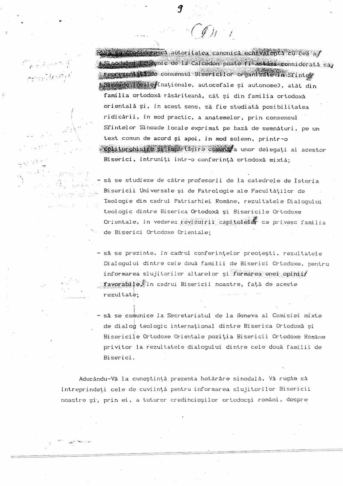
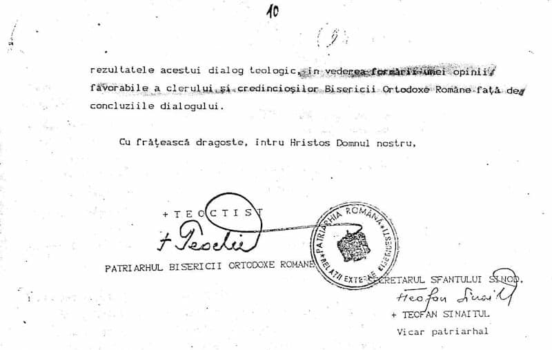

Lupta dintre ierarhii slujitori ai lui Hristos și ierarhii slujitori ai diavolului nu este o problemă recentă. De la începutul Bisericii și până la sfârșitul lumii va exista acest conflict. În secolul al IV-lea, considerat secolul de aur al creștinătății, Sfântul Chiril al Ierusalimului scria: „Să nu te tulburi dacă vei auzi că merg până la vărsarea sângelui episcopi împotriva episcopilor, clerici împotriva clericilor și popoare împotriva popoarelor. (…) Dacă între apostoli a fost vânzare, te mai miri dacă între episcopi este ură de frați?” – Sfântul Chiril al Ierusalimului, Cateheze, E.I.B.M.B.O.R, București, 2001, p. 251. În viața Sfântului Sfințit Mucenic Proterie, Patriarhul Alexandriei (prăznuit pe 28 februarie), citim cum un preot eretic – Timotei Elurul – se arăta monahilor ca și cum ar fi fost înger, îndemnându-i să îl dea jos pe Sfântul Proterie de pe scaunul patriarhal și să îl așeze pe el patriarh. Deși pare greu de crezut, totuși monahii au putut cădea în această înșelare. Crezând că li s-a arătat un înger, monahii l-au ucis – în baptisteriu – pe sfântul patriarh. Locul său a fost ocupat de ereticul Timotei Elurul1. Acesta a făcut parte din marea ceată de episcopi – se spune că au fost aproape cinci sute – care au semnat în anul 476 Enciclica împăratului Vasilisc în care s-a dat anatemei Sinodul Ecumenic de la Calcedon. Conflictul dintre Sfântul Proterie și ereticul Timotei are rezonanțe, în istorie, până în vremurile noastre. Creștinilor le este destul de ușor să recunoască cine sunt urmașii lui Timotei. Să ne rugăm să ne trimită Dumnezeu și urmași ai Sfântului Proterie…
***
În Alexandria, cetatea Egiptului, luând scaunul patriarhiei Dioscor ereticul, după moartea Sfântului Chiril, și umplându‑se tot Egiptul de eresul său, era un preot dreptcredincios și nebiruit în creștineștile dogme, anume Proterie, sfânt cu viața și plin de înțelepciunea cea insuflată de Dumnezeu. Acesta, văzând pe mulți abătându‑se la eresul patriarhului, care bârfea că este o fire în Hristos, li se împotrivea tare cu cuvinte nebiruite. Iar patriarhul Dioscor se mâhnea asupra lui; însă vrând să‑l aducă la unirea sa cea răucredincioasă, îl momea cu înșelăciune, cinstindu‑l cu protopopia. Dar nimic n‑a sporit, deoarece Sfântul Proterie era tare în credință, ca unul ce învățase bine dreapta credință de la Prea Sfințitul Chiril, care fusese mai înainte patriarh al Alexandriei.
După aceasta, adunându‑se în Calcedon, pe vremea împărăției lui Marcian, al patrulea Sinod al Sfinților Părinți din toată lumea, Dioscor a fost mustrat pentru eresul său și a fost osândit la depărtarea din treapta patriarhiei și la despărțirea de Biserică. Fiind izgonit în țara Paflagoniei, în cetatea ce se numea Gangra, a murit acolo după câtăva vreme. Iar în Alexandria, după lepădatul Dioscor, a fost ales de credincioșii arhierei, de clerici și de drept-credincioșii din patriarhicescul scaun Sfântul Proterie, bărbat cu adevărat vrednic de o treaptă ca aceea. Dar poporul de obște al Alexandriei, cel adăpat cu erezia lui Dioscor, și unii clerici care se vătămaseră cu erezia nu primeau alegerea lui Proterie.
Deci, alegându‑se patriarh Sfântul Proterie de cei credincioși, a ocupat scaunul și a început a preamări credința cea dreaptă, întărită de Sinodul Sfinților Părinți din Calcedon. Apoi s‑a făcut gâlceavă și tulburare, pentru că unii din clerici, între care erau mai de frunte preotul Timotei, care se poreclea Eliur și diaconul Petre Mongos, amândoi sfințiți de Dioscor și plini de eresul acestuia, s‑au despărțit de soborul bisericesc, nevoind să aibă împărtășire cu Sfântul Proterie și făceau dezbinare în popor, pornindu‑l spre gâlceavă. Deci era mare dezbinare în Biserica Alexandriei. Unii se țineau de acest nou patriarh, socotind bine Ortodoxia, iar alții, poftind iarăși pe Dioscor și blestemând dogmele Sinodului din Calcedon. Apoi gâlcevindu‑se și făcând război unii cu alții, îndrăzneau și asupra patriarhului; căci strigau nepricepuții tulburători asupra Sfântului Proterie, numindu‑l desfrânat, deoarece, fiind în surghiun arhiereul Dioscor, i‑a luat mireasa lui, adică Sfânta Biserică; apoi mai ziceau că Proterie este și eretic, și nevrednic de treapta patriarhiei.
Deci, Sfântul Proterie, răbdând multe primejdii, prin tulburarea poporului eretic, și temându‑se de ucigașele mâini, a avut neapărată nevoie de oaste pentru apărarea sănătății sale; căci totdeauna îi era frică, așteptând năvălirea poporului, fiindcă și asupra începătorilor curții sale se răsculase și se pornise și asupra împărăteștii oști, care se afla în cetate. Căci în acea vreme, venind în cetate omul împăratului din Tebaida, ca să împace tulburarea, popoarele aruncau cu pietre asupra ostașilor care intrau cu dânsul. Iar ostașii, văzând răscularea poporului, au alergat în lăcașul ce se numea Serapidis și s‑au închis într‑însul; iar poporul, alergând, a împresurat lăcașul și, luându‑l, au ars cu foc de vii pe ostașii de acolo.
Auzind de aceasta, dreptcredinciosul împărat Marcian s‑a mâniat foarte și a trimis oaste mai mare, care a smerit pe cetățeni și popor, luând grâul și hrana cetății, care se aducea în Alexandria cu corăbiile din cetățile și hotarele Egiptului, și poruncind să nu le mai ducă în Alexandria, ci în Pilusia, iar de acolo în Constantinopol. A mai luat de la alexandrini și băile poporului și alte lucruri mai plăcute; apoi le‑a oprit toată libertatea și obișnuitele priveliști. De acest lucru supărându‑se cetățenii, și mai ales pentru lipsa pâinii, fiind cuprinși de foame, s‑au smerit și au rugat pe prea sfințitul Patriarh Proterie să se ducă să roage pe împărat pentru dânșii. Deci, ducându‑se prea sfințitul patriarh, a înduplecat pe împărat pentru cetatea sa și a câștigat toate cele cerute, căci s‑a dăruit cetății libertatea cea dintâi și pâinea li s‑a întors. Apoi a viețuit arhiereul lui Dumnezeu în pace câtăva vreme pe scaunul său. Iar pe Timotei Eliur, cel ce n‑a voit să se pocăiască, și pe gâlcevitorii cei răi, i‑a despărțit de Biserică.
După aceasta a murit dreptcredinciosul împărat Marcian și tulburătorii eretici și‑au înălțat iarăși cornul lor, începând a îndemna la gâlceavă și tulburare pe poporul cel nepriceput și n‑au încetat până ce nelegiuiții nu și‑au săvârșit răutatea lor. Căci Timotei Eliur, fiind viclean, înșelător și vrăjitor, cu meșteșug i‑a amăgit pe monahii din Egipt care viețuiau în mănăstiri și în sihăstrii. Astfel, căutând o noapte fără lună și acoperindu‑se cu îmbrăcăminte întunecoasă, a înconjurat chiliile călugărești, chemând pe nume pe fiecare și când răspundea fiecare din ei și întreba cine este și ce îi trebuie, el le zicea: „Eu sunt unul din slujitoarele duhuri, trimis de la Dumnezeu ca să nu aveți împărtășire cu Proterie și soborul din Calcedon să nu‑l primiți; iar pe Timotei Eliur să‑l puneți episcopul Alexandriei”. Astfel vicleanul înșelător, ajutându‑i diavolul, i‑a amăgit cu farmece. Iar aceia, neînțelegând meșteșugul vrăjmașului, au crezut minciuna ca pe un adevăr și, spunând unul altuia arătarea cea îngerească, s‑au sfătuit și s‑au adunat în număr mare. Deci s‑au dus cu mânie în Alexandria, ca la război, asupra celui nevinovat dreptcredincios arhiereu al lui Dumnezeu, Proterie, vrând să‑l izgonească din biserică.
În acea vreme Timotei, îndemnând în Alexandria pe unii cu amăgire, iar pe alții în taină, și‑a adunat o ceată mare de tulburători și, socotind vreme lesnicioasă, când Dionisie antipatul nu era în cetate, ci zăbovea în părțile de sus ale Egiptului, a mers în biserică cu mult popor și cu ostași înarmați și cu monahii care veniseră la dânsul, având cu sine doi episcopi lepădați pentru credința lor cea rea; asemenea și cu clericii care erau goniți pentru alte pricini. Deci s‑a sfințit Timotei de episcopii cei lepădați și s‑a numit patriarh al Alexandriei, netemându‑se de canoanele bisericești, căci de la legile împărătești nu aștepta vreo judecată, pentru că toată nădejdea sa își pusese în poporul cel tulburat și în mulțimea monahilor celor amăgiți. Iar prea sfințitul Patriarh Proterie, văzând acea tulburare și neavând ajutor și apărare de la nimeni, nefiind în cetate antipatul, a gândit să fugă și, tăinuindu‑se de toți, noaptea a ieșit din cetate. Și odihnindu‑se el la un loc ascuns, i s‑a arătat în vedenie Sfântul prooroc Isaia, zicându‑i: „Întoarce‑te în cetate, căci eu aștept să te iau pe tine”.
Această vedenie luând‑o în seamă prea sfințitul Proterie și cunoscând mucenicescul sfârșit ce‑i va fi, s‑a întors și a intrat în botezătoarea bisericii. Iar tulburătorii, căutând pretutindeni pe Proterie, s‑au înștiințat că este în botezătoare și mai întâi l‑au încuiat acolo, apoi intrând la dânsul cei înșelați de Timotei, l‑au ucis cu nemilostivire cu ciomegele de trestie pe care le purtau în mâini și care aveau în capete fier ascuțit. Apoi au ucis și pe alți șase oameni care erau cu dânsul. Deci au vărsat sânge nevinovat într‑acea vreme, când Paștele nostru, Hristos, pentru noi S‑a jertfit, căci era ziua Sâmbetei celei Mari când s‑a săvârșit acea cumplită ucidere. Dar nu le era destul ucigașilor, ci cei ce nu se săturaseră de sângele cel nevinovat, mai mult și‑au întins răutatea lor. Căci, legând trupul cel mort al Sfântului Proterie de picioare, l‑au tras în mijlocul cetății, bătându‑i și zdrobindu‑i în bucăți mădularele lui. Iar unii, mai fără de omenie, rupeau trupul lui cu dinții, ca fiarele și câinii; apoi, aprinzând un foc mare, l‑au ars și l‑au făcut cenușă și praful în vânt l‑au aruncat. După aceea cu porunca celui fără de lege patriarh al lor, Timotei, au ars și scaunul patriarhiei, pe care șezuse Sfântul Proterie, ca și cum era întinat de el, singuri necurați fiind ei.
După o ucidere cumplită ca aceea a Sfântului Proterie, mincinosul patriarh Timotei Eliur a trimis pe ostașii săi în toate cetățile Egiptului ca să gonească pe dreptcredincioșii arhierei, iar în locul acelora să așeze pe alții, pe care singur i‑a pus. Atunci episcopii și clericii cei necăjiți și toți cei ce erau dreptcredincioși, au scris cu lacrimi împăratului Leon, cel ce după Marcian se alesese, cum și la prea sfințitul Anatolie, patriarhul Constantinopolului, înștiințându‑l de toate cele ce se făcuseră, și rugându‑l să izbăvească Biserica Alexandriei de o tiranie ca aceea. Iar împăratului și patriarhului le‑au fost jale de uciderea nevinovatului arhiereu al lui Dumnezeu, Proterie. Și îndată, trimițând împăratul pe dregătorii săi cu oaste mare, au pedepsit pe cei ce au tulburat liniștea; pe unii cu tăierea mâinilor, pe alții cu tăierea limbii, iar pe alții în legături și în temnițe, pe alții cu bătăi și cu izgoniri; dar pe Timotei Eliur, mincinosul patriarh, cu episcopii și cu clericii lui, l‑au trimis la judecata duhovnicească.
Deci, judecându‑se Timotei de dreptcredincioșii arhierei, a luat plată după lucrurile sale, că nu numai de arhierie, ci și de creștinătate înstrăinându‑se, l‑au trimis în surghiun, în cetatea Gangra, unde s‑a săvârșit și Dioscor, învățătorul său. Iar în locul lui s‑a ales la Patriarhia Alexandriei alt Timotei, care se chema Salofachiul, bărbat dreptcredincios și înțelept, care pentru bunul său obicei era iubit. Astfel a primit pace și liniște Biserica lui Hristos cea din Alexandria care, cu dreaptă credință, slăvește pe Tatăl și pe Fiul și pe Sfântul Duh, pe Unul în Treime Dumnezeu, Căruia se cuvine slava în veci. Amin.
(Din volumul Acceptăm unirea cu monofiziții?, autori – Ion Vlăducă, drd. Dumitru Popescu și drd. Dumitru Fecioru, Editura Predania, 2008, pp. 296-300.)

Răspunsul Comitetului Ortodox Oriental la Raportul Comitetului Interortodox privind ridicarea anatemelor și restabilirea comuniunii
(Întrunirea Comisiei Mixte de Dialog Teologic)
Chambesy, 1-6 noiembrie 1993
Notă: Documentul prezentat aici este preluat din volumul „Sunt anticalcedonienii ortodocși”, Editura Evanghelismos, 2007, pp. 186-188. Din document reiese clar faptul că ereticii anticalcedonieni nu vor să recunoască ultimele patru Sfinte Sinoade Ecumenice. De altfel, patriarhul copt Shenouda al III-lea a mărturisit – în fața Comisiei Interortodoxe de Dialog cu Bisericile Vechi Orientale, în februarie 1979 – că e imposibil ca anticalcedonienii să își revizuiască poziția față de Sfântul Sinod de la Calcedon: „Cât privește Sinoadele Ecumenice, acceptăm pe primele trei dintre acestea…. Respingem însă Sinodul de la Calcedon… Pot să vă spun cu totul deschis că nu e cu putință ca Bisericile Orientale să accepte Sinodul de la Calcedon… Aveți șapte Sinoade Ecumenice. Dacă vă lipsește unul, nu aveți multe de pierdut” (S.A.O., p. 30). Din documentul de față se vede însă că ni se cere să „pierdem” nu un sinod, ci patru…
Oricât ar părea de ciudat, aroganța anticalcedonienilor nu se oprește aici. În „Întâlnirea subcomitetelor pentru dialogul teologic dintre Bisericile ortodoxe Răsăritene și Bisericile Vechi Orientale”, care a avut loc la Mănăstirea Pendeli din Grecia în anul 1973, un teolog eretic a spus: „În lumina noii înțelegeri, fiecare parte ar putea să accepte orice îi este potrivit ei din hotărârile celor șapte sinoade. Nu există nicio obligație pentru nicio parte de a recunoaște hotărârile celor patru sinoade de după Sinodul Ecumenic de la Efes din 431.” (Din volumul Acceptăm unirea cu monofiziții?, autori – Ion Vlăducă, drd. Dumitru Popescu și drd. Dumitru Fecioru, Editura Predania, 2008, p. 148). Altfel spus, nu numai că anticalcedonienii nu vor să recunoască ultimele patru Sfinte Sinoade Ecumenice, dar vor să ne convingă și pe noi să le minimalizăm valoarea, să le considerăm opționale, lipsite de importanță.
În contrast cu această poziție rătăcită stă cea a Arhiepiscopului ortodox Ieronim Kotsnonis: „Biserica a pretins dintotdeauna o unitate absolută în dogmă, iar atunci când s-a pus problema să se cadă la înțelegere cu ereticii din afara ei, a preferat să-i mențină pe aceștia separați de ea decât să accepte falsificarea dogmei și a unirii mincinoase și înșelătoare cu aceștia” (S.A.O., p. 27). Este de neînțeles cum, la doi ani de la semnarea documentului de mai jos, Sfântul Sinod al Bisericii Ortodoxe Române – în 8-9 decembrie 1994 – face referire la o „mărturisire comună a aceluiași conținut al credinței comune” cu Bisericile necalcedoniene. Unde mai este credința comună, când ereticii resping ultimele patru Sfinte Sinoade Ecumenice? Sau în ce măsură și-a păstrat Biserica Ortodoxă Română dreapta credință în decembrie 1994?
1. Regretăm că trebuie să ne exprimăm profunda nemulțumire cu privire la raportul prezentat de Comitetul Interortodox asupra ridicării anatemelor și restabilirea comuniunii. Limbajul raportului nu pare să corespundă adevărului înțelegerii mutuale și spiritului de concordie la care am ajuns la întrunirea mixtă de la Chambesy, în 1990.
Considerăm că limbajul care a constituit, de asemenea izvorul diviziunii noastre originale, ar putea fi într-adevăr folosit pentru transmiterea rezultatelor pozitive ale acordurilor mutuale în cadrul Bisericilor noastre locale și ridicarea problemei referitoare la dificultățile rămase.
Considerăm că este inutil să ne întoarcem la problemele complexe ale trecutului pe care considerăm că le-am rezolvat printr-o muncă deosebită și cu ajutorul lui Dumnezeu. Bisericile noastre ne-au autorizat să continuăm dialogul și să construim unitatea dintre cele două familii ale noastre numai pe baza acordurilor precedente.
2. Acordul la care am ajuns la Chambesy în 1990 cu privire la sinoadele ecumenice nu implică acceptarea celor patru sinoade ulterioare ca ecumenice. Astfel încât propunerea din raport (punctul 6 de exemplu) creează un obstacol major în calea realizării comuniunii ecleziale depline. Recunoaștem că oamenii noștri sunt extrem de sensibili la o asemenea propunere.
Drept pentru care ținem să ne reafirmăm opinia:
a) că anatemele împotriva tuturor sinoadelor și persoanelor vor fi ridicate fără a se menționa numele lor.
b) că ridicarea anatemei unui sinod sau a unei persoane nu implică acceptarea acelui sinod, sau recunoașterea acelei persoane ca sfântă.
c) că fiecare Biserică sau familie de Biserici poate ridica anatemele în felul în care consideră mai potrivit.
3. În ce privește interpretările istorico-teologice cu privire la însăși cauza diviziunii, ambele noastre familii au ajuns la concluzia că aceasta nu a fost provocată de vreo „înțelegere eronată”, ci de deosebirile de formulare ale aceluiași adevăr, agravate de factorii politici sau culturali. În urma acestei neînțelegeri comune am respins împreună atât erezia nestoriană cât și pe cea eutihiană. Ne-am acceptat reciproc întrucât am susținut cu loialitate aceeași credință apostolică și aceeași învățătură hristologică a Părinților noștri comuni.
4. Deși recunoaștem necesitatea pomenirii Întâistătătorilor Bisericilor locale autocefale în liturghiile comune prilejuite de ocazii speciale, ca semn al comuniunii noastre, ținem să subliniem faptul că o Biserică locală nu este obligată să comemoreze sfinții altei Biserici locale.
5. Recunoaștem semnificația oficierii și proclamării comuniunii noastre într-un act solemn, în contextul Liturghiei euharistice. Totuși, nu suntem de acord cu „lectura solemnă a unui Act”, așa cum se propune în Raport. Actul simbolic al restabilirii comuniunii ar putea fi discutat în viitor de un comitet competent pe măsură ce ne apropiem de acel mare eveniment.
6. Este nevoie de unele clarificări cu privire la:
a) paragraful 9 al Raportului privind organizarea comună a administrației bisericești
b) semnificația Dipticelor în Biserica Ortodoxă din ziua de azi.
Am început dialogul teologic dintre cele două familii ale noastre cu speranța arzătoare că vom ajunge într-o zi la consensul deplin, care să ne ducă la restabilirea comuniunii. Călăuziți de Duhul adevărului și unității, am realizat acordul total asupra celei mai dificile probleme de doctrină care ne-a divizat. Acum sarcina noastră permanentă este să completăm edificiul unității pe acest teren comun și solid. Apreciem toate semnalele pozitive din Raport, în aceasta direcție, chemăm la îndepărtarea obstacolelor rămase și ne exprimăm angajamentul față de sarcina urgentă și comună ce ne stă înainte.

Poziția B.O.R. este „străină de cugetarea Bisericii Sobornicești”
fragment din Memoriul Comunității Sfântului Munte – 14/27 mai 1995
„… adresându-ne:
– Sanctității Sale Patriarhului ecumenic Bartolomeu și Sfântului Sinod Patriarhal de la Constantinopol,
– Prea Fericiților Întâistătători ai Patriarhiilor istorice și ai celorlalte Patriarhii și Ierarhilor Sfintelor Sinoade din cadrul acestora,
– Sfințitului cler ortodox și poporului binecredincios de pretutindeni,
Denunțăm cele de mai jos:
(…) 10. Decizia Sfântului Sinod al Bisericii Ortodoxe a României [din 8-9 decembrie 1994] ca fiind străină de cugetarea Bisericii Sobornicești, din următoarele motive:
a. Consideră că anatemele îndreptate împotriva ereticilor au fost aruncate de Sinoadele Ecumenice în duhul lipsei de dragoste, în vreme ce astăzi, când există dragoste, unirea poate fi lesne înfăptuită. În acest fel se aduce o hulă foarte grea împotriva Duhului Sfânt, sub inspirația Căruia au fost luate aceste hotărâri și împotriva memoriei dumnezeieștilor Părinți, pe care Biserica îi numește teofori (purtători de Dumnezeu), guri ale Cuvântului, organe ale Duhului etc;
b. Propune un fapt nemaiîntâlnit în istoria Bisericii: înlocuirea autorității Sinodului Ecumenic cu consensul Sfintelor Sinoade locale.
c. Aprobă organizarea de programe pentru a face cunoscute credincioșilor deciziile luate de Comisia Mixtă, fără ca toate Bisericile Ortodoxe să se fi pronunțat în prealabil în consens. Acest fapt este întristător și vătămător pentru poporul român evlavios.
Inima noastră se umple de o mâhnire nespusă din pricina acestei decizii a Bisericii Ortodoxe a României.” (S.A.O., p. 42)
„Destui Ierarhi ai Bisericii Ortodoxe ne-au mărturisit că nu au fost deloc informați în legătură cu cele întâmplate în cadrul Dialogului Teologic și că nu vor primi niciodată vreo unire din partea anticalcedonienilor și a Sinoadelor Ecumenice. Întrebăm. Este justificată o asemenea lipsă de informare a Ierarhilor Bisericii direct interesați, mai cu seamă când sinodalitatea este o condiție obligatorie în abordarea unor chestiuni atât de serioase? (…) Afirmăm cu smerenie că suntem mișcați de un sentiment de responsabilitate și nu urmărim altceva decât reașezarea cât mai grabnică a Dialogului pe baze corecte, în așa fel încât și noi ortodocșii să ne păstrăm integră Credința dreptslăvitoare, dar și anticalcedonienii să aibă posibilitatea de a se întoarce la adevărata Biserică a lui Hristos, de care sunt separați de cincisprezece veacuri.
Credem că, prin harul lui Dumnezeu, strădania coroborată a tuturor mădularelor Bisericii va avea rezultate pozitive.
Însă, în cazul în care unirea se va înfăptui împotriva Unicului Adevăr – să nu fie! – declarăm clar și categoric că Sfântul Munte nu va accepta o astfel de unire mincinoasă.
Toți reprezentanții și Întâistătătorii celor douăzeci de Sfinte Mănăstiri ale Sfântului Munte Athos reuniți în Sinaxă.” – (S.A.O., pp. 43-44)
Despre cenzurarea cultului ortodox și noua inchiziție ecumenistă
Pentru creștini, cultul Bisericii Ortodoxe este o adevărată școală. Slujbele îi învață pe creștini să Îl cunoască pe Dumnezeu, să învețe să Îl iubească și să se iubească unii pe alții. Bogăția slujbelor îi face să devină cu adevărat teologi – vorbitori cu și despre Dumnezeu. Mulți oameni simpli, neștiutori de carte, au urcat pe culmile înțelepciunii hrănindu‑se doar cu cele auzite la Biserică. Cultul Bisericii face Tradiția vie în vremurile noastre. El exprimă învățăturile dogmatice ale Bisericii, fiind o cateheză continuă prin care credinciosul este urcat pe treptele cunoașterii lui Dumnezeu…
În Catehismul ortodox se afirmă că „Biserica e păzitoarea, tâlcuitoarea și propovăduitoarea fără greș a Descoperirii dumnezeiești și, prin aceasta, a Tradiției”2. Apoi se arată care sunt izvoarele Sfintei Tradiții: „Conținutul Sfintei Tradiții, adică al Tradiției apostolice, a fost fixat de Biserică în opt izvoare și anume:
1. Simbolurile de credință (…)
2. Cele 85 de canoane apostolice;
3. Definițiile dogmatice și canoanele celor 7 Sinoade Ecumenice și ale celor 9 Sinoade particulare (aprobate de Sinodul Trulan);
4. Mărturisirile de credință ale martirilor;
5. Scrierile Sfinților Părinți;
6. Cărțile de slujbă ale Bisericii și
7. Mărturiile istorice și arheologice referitoare la credința creștină apostolică.”3
Un creștin, citind că unul din cele opt izvoare ale Sfintei Tradiții este cel al cărților de cult, și citind că Biserica este păzitoarea Sfintei Tradiții, trage concluzia că nimeni nu va îndrăzni să cenzureze cărțile de cult. Și asta pentru că, implicit, ar lovi în Sfânta Tradiție. Cu toate acestea însă, cultul ortodox se află într-o perioadă de grea încercare, și asta pentru că ereticii necalcedonieni i-au convins pe ierarhii Bisericii Ortodoxe că trebuie să îl cenzureze.
În Referatul nr. 4870/1994, Mitropolitul Nestor Vornicescu și ceilalți membri ai comisiei de dialog cu necalcedonienii cereau Sinodului B.O.R.: „Propunem, de asemenea, ca toate anatematismele și pasajele incriminatoare la adresa Bisericilor Ortodoxe Orientale și a unor sfinți cinstiți de acestea să fie scoase din cărțile de cult ale Bisericii noastre.”
Această inițiativă a fost popularizată în mediul teologic universitar. Părintele Nicolae Necula afirma, în Vestitorul Ortodoxiei, următoarele: „Cât privește cărțile de cult, acestea necesită o revizuire și reeditare a lor, curățite de anatemele sau blestemele îndreptate împotriva unor corifei ai celor două familii de Biserici și mai ales din familia Bisericilor Vechi Orientale, condamnați și înfierați în Sinodiconul care se citește în Duminica Ortodoxiei sau în slujba hirotonirii Episcopului ortodox”4.
Inițiativa de purificare a cultului prin scoaterea referințelor la ereticii necalcedonieni nu aparținea însă ierarhilor B.O.R., ea fusese luată de Comisia Mixtă pentru Dialogul dintre Biserica Ortodoxă și Bisericile Ortodoxe Orientale, la Centrul Ortodox al Patriarhiei Ecumenice – în Geneva, 1-6 Noiembrie 1993. Pentru ca Biserica Ortodoxă să se unească cu ereticii era necesar ca Sfânta Tradiție să fie cenzurată… Față de o astfel de fărădelege, părinții athoniți au avut o reacție fermă. În Memoriul Comunității Sfântului Munte, din 14/27 mai 1995 este combătută și „Decizia extrem de neliniștitoare a Comisiei Mixte privitoare la «curățirea» textelor liturgice de textele care se referă la anticalcedonieni ca la niște eretici. Cu alte cuvinte, Sfintele Slujbe ale multor Sfinți Mărturisitori ai credinței, ale Sfinților Cuvioși, și mai cu seamă ale Sfinților Părinți de la Sinodul al IV-lea ecumenic vor înceta de a mai fi citite de către poporul lui Dumnezeu.
Întrebăm: Toate aceste scrieri sfinte sunt simple piese de ornament ale imnografiei ortodoxe, încât să poate fi îndepărtate fără durere și fără vătămare, sau sunt elemente fundamentale ale Ortodoxiei care, odată eliminate, pot pricinui dispariția a ceea ce înseamnă Ortodoxia? După părerea noastră, această decizie constituie o inovație de neacceptat, care va avea consecințe nefaste asupra identității însăși a Bisericii Ortodoxe.”5
Cenzura cărților de cult înseamnă batjocorirea Sfintei Tradiții. Această fărădelege nu a pornit însă din inițiativa anticalcedonienilor, ci este mult mai veche. Cel mai cunoscut exemplu în acest sens – în Biserica Ortodoxă Română – este cenzurarea Triodului. De exemplu, strofa a noua de la Starea a treia:
„O, ce nebunie!
Pe Hristos omoară
Cei ce‑au ucis pe profeți”
lipsește din Prohodurile tipărite în ultima vreme6. Să nu se creadă că cenzurarea Prohodului a avut ca scop doar scurtarea slujbei – un aggiornamento pe placul creștinilor grăbiți ai zilelor noastre, învățați să trateze și slujba în mare viteză. S‑au scos în mod special fragmentele în care era vorba de iudeii care L‑au răstignit pe Hristos.
Iată un alt exemplu strofa 58 din Cântarea întâi – în varianta completă:
„Îngâmfat Israil,
Ucigașe popor!
Pentru ce pe Varava, pătimaș, slobozi,
Iar pe Domnul pentru ce Îl răstignești?”
Așa cum poate constata oricine face comparația, în total au fost cenzurate 12 strofe din Prohod7. Din prima cântare s‑au scos 3 strofe din 76, din a doua 3 din 63, din a treia 6 din 49.
Această cenzură, neunitară (care a micșorat și mai mult raportul cantitativ dintre cântarea a treia și primele două), nu poate da roade de folos. În momentul în care începem să cenzurăm cultul, nu mai considerăm că are inspirație dumnezeiască și negăm harul Sfinților Părinți și al Cuvioșilor care au alcătuit sfintele slujbe.
Dacă cenzura s‑ar fi rezumat la scurtarea Prohodului, ar fi fost poate o excepție fără ecouri. Dar, din păcate, cenzura s‑a extins și asupra altor texte liturgice.
Iată, de exemplu, un fragment din Ceaslov, din Troparele Învierii – e vorba de Troparul Glasulului întâi: „Piatra fiind pecetluită de iudei și ostașii străjuind preacurat trupul Tău, înviat‑ai a treia zi, Mântuitorule, dăruind lumii viață…”8.
În noile cărți de muzică bisericească, acest tropar începe cu cuvintele „Piatra fiind pecetluită și ostașii străjuind…” Nu se mai precizează cine a pecetluit piatra de la Sfântul Mormânt, trecându‑se astfel cu vederea mărturia Sfintei Evanghelii: Iar a doua zi, care este după vineri, s‑au adunat arhiereii și fariseii la Pilat, zicând: „Doamne, ne‑am adus aminte că amăgitorul Acela a spus, fiind încă în viață: «După trei zile Mă voi scula.» Deci, poruncește ca mormântul să fie păzit până a treia zi, ca nu cumva ucenicii Lui să vină și să‑L fure și să spună poporului: «S‑a sculat din morți.» Și va fi rătăcirea de pe urmă mai rea decât cea dintâi.” Pilat le‑a zis: „Aveți strajă; mergeți și întăriți cum știți.” Iar ei, ducându‑se, au întărit mormântul cu strajă, pecetluind piatra (Matei 27, 62‑66).
Mergând mai departe pe drumul cenzurării cultului ortodox, unii preoți au îndrăznit chiar să nu mai citească în Săptămâna Mare pericopa evanghelică în care poporul iudeu cere răstignirea lui Pilat.
Dar una din cele mai grave cenzurări ale cultului este scoaterea din Molitfelnicul ortodox a slujbei de primire în biserică a evreilor (odată cu aceasta au fost scoase și slujbele de primire a catolicilor, a armenilor și a altor eretici).
Vorbind despre importanța unor astfel de slujbe, Sfântul Ioan de Kronstadt scria: „Ce înseamnă rânduiala trecerii de la diferite credințe și confesiuni și a unirii cu Biserica Ortodoxă? Necesitatea indispensabilă a lepădării de credințele și confesiunile false, a negării rătăcirilor, a mărturisirii adevăratei credințe și pocăinței de toate păcatele dinainte, a făgăduinței date lui Dumnezeu de a păzi și mărturisi cu tărie credința nealterată, a feririi de păcate și a viețuirii în virtute”9.
Nu putem tăia o parte dintr‑o slujbă fără ca aceasta să nu afecteze restul slujbei. E adevărat, citirea lepădărilor nu face parte din slujba propriu‑zisă a Botezului, ci doar o precede. Rostul catehezelor respective era de a‑i pregăti pe cei care veneau de la întunericul rătăcirii la lumina adevărului pentru marele pas pe care se pregăteau să îl facă. Totuși, din moment ce alte Biserici Ortodoxe au considerat că slujba respectivă trebuie făcută înaintea Botezului, așa cum am primit de la înaintașii noștri, opțiunea de a renunța la ea arată existența unei alte perspective dogmatice.
E foarte trist că din Triodul românesc lipsește cea mai importantă slujbă cu caracter dogmatic din tot anul bisericesc, e vorba de Sinodiconul Ortodoxiei, slujbă în care sunt anatemizați nominal marii eretici și sunt cinstiți marii sfinți apărători ai Ortodoxiei. Celelalte popoare ortodoxe au această slujbă, și mari teologi – cum este Mitropolitul Hierotheos Vlachos – au scris mult despre importanța ei. Întrucât cultul bisericesc are un caracter catehetic, dacă va fi văduvit de amprenta dogmatică va avea roade pe măsură, credincioșii fiind mult mai ușor de atras în ghearele diferitelor rătăciri.
„În Triodul de la Neamț (1833), deși se încerca totuși o respectare cât mai fidelă a traducerii grecești, «nimic adăugând sau scăzând, ci întocmai precum iaste [Triodul] cel Grecesc, afară de Canonul Litaniei Sfintelor Icoane din Duminica întâia a Sfântului Post ce să numește a Pravoslaviei și a Cărții Sfântului a toată lumea al Șaptelea Sobor, întru carea blestemă pre toți ereticii luptători de Icoane și pre toți ceilalți începători ai eresurilor ce au stătut în vremi împotriva Sfintei Pravoslavnicii Credințe; și binecuvântează pe toți Păstorii, Apărătorii, Învățătorii și Luminătorii carii s‑au nevoit și până la sânge au stătut pentru apărarea Pravoslaviei. Fericește și pre toți Pravoslavnicii împărați și împărătese și pre toți Drept Slăvitorii carii au stătut în vremi, ajutători și apărători dreptei credințe. Care Canon, dimpreună cu soborniceasca Carte, fiind că până acum nici în Trioadele cele mai dinainte n‑au fost tipărit10, nici noi n‑am găsit de cuviință ca chiar în locul lui în Duminica Pravoslaviei, pre cum iaste în cel grecesc, să se tipărească. Ci pentru oareșicare supțiri socoteli (altfel spus: „lăsându‑ne amăgiți de înțelepciunea lumii acesteia” – n.n.), am poruncit ca pe urmă în deosebită filadă11 să se tipărească”12.
„Oare atâția Sfinți Părinți care au fost luminați de Dumnezeu și au trăit în aceeași vreme cu ei [cu monofiziții] i-au înțeles greșit, și venim noi acum, după atâtea veacuri, ca să-i corectăm pe Sfinții Părinți? Dar nici minunea Sfintei Eufimia nu o pun la socoteală? Oare și ea a înțeles greșit tomul ereticilor?”
Mitropolitul Hierotheos Vlachos spune: „Ne este desigur cu neputință să analizăm și să tâlcuim toate lucrurile minunate și pline de semnificație din Sinodiconul Ortodoxiei. Cititorul va trebui să îl parcurgă cu băgare de seamă și astfel îi va descoperi însemnătatea”13.
Sfântul Teofan Zăvorâtul arăta că prin Sinodicon se aude glasul cel puternic al dreptei credințe, care osândește mulțimea de erezii și de eretici14. El explică de ce în zilele noastre Biserica nu se grăbește să pronunțe anatema asupra fiecărei grupări eretice nou înființate: „La noi s‑au prășit acum o mulțime de nihiliști și de nihiliste, de darwiniști, de spiritiști: dacă în învățătura lor ar fi vreo rătăcire nouă, credeți că Biserica ar tăcea, n‑ar glăsui, nu i‑ar osândi și nu i‑ar da anatemei? Dimpotrivă, s‑ar face sinod fără întârziere și toți, dimpreună cu învățăturile lor, ar fi dați anatemei; la Sinodiconul de acum al Ortodoxiei s‑ar mai adăuga un punct: «Lui Büchner, Feuerbach, Darwin, Renan, Cardec și tuturor următorilor lor – anatema!». Dar nu e nicidecum nevoie de un sinod special pentru așa ceva, nici de vreun adaos. Toate învățăturile lor mincinoase au fost deja date anatemei…”15.
Afirmația Sfântului Teofan Zăvorâtul este întărită de completarea anatematismelor din Sinodicon cu cele privitoare la învățătura despre „teoria ramurilor”. Completarea a fost stabilită de Sfântul Sinod al Bisericii Ortodoxe Ruse din afara Rusiei, care s‑a întrunit la Vancouver, Canada, în 1983 și care a avut o poziție mult mai dură: „Anatema celor care atacă Biserica lui Hristos învățând că Biserica Sa este împărțită în așa‑zise «ramificații» ce se deosebesc în doctrină și în felul de viață sau că Biserica nu există vizibil, ci va fi formată în viitor, când toate «ramificațiile» – sectele, denominațiunile și chiar religiile – vor fi unite într‑un singur trup, și care nu deosebesc Preoția și Tainele Bisericii de cele ale ereticilor, ci spun că botezul și euharistia ereticilor sunt eficace pentru mântuire; prin urmare, celor ce cu bună‑știință sunt în comuniune cu acești eretici înainte‑menționați sau celor ce susțin, răspândesc sau păzesc erezia lor ecumenistă sub pretextul dragostei frățești sau al presupusei uniri a creștinilor despărțiți, să fie Anatema”16.
Într‑una din conferințele sale ținute la Facultatea de Teologie din București, arhimandritul Efrem, starețul mănăstirii aghiorite Vatoped, a fost întrebat: „Ce este Sinodiconul Ortodoxiei care se citește în Grecia în mănăstiri și în catedrale și dacă n‑ar trebui cunoscute aceste lucruri și în România?” El a spus: „Noi, în Duminica Ortodoxiei, facem o litanie și citim anatemele celor șapte Sinoade Ecumenice. Acesta este lucrul pe care îl facem. Dumneavoastră nu îl faceți aici?” La răspunsul negativ al părintelui Constantin Coman, arhimandritul a continuat: „Este bine să‑l faceți. Noi, după apolisul dumnezeieștii Liturghii, facem procesiune în mănăstire, cu patru opriri și rostim anatemele. În același timp rostim și credința hotărâtă de cele șapte Sinoade Ecumenice, pomenind pe luptătorii pentru dreapta credință începând din timpul Sinoadelor și ajungând până la Sfântul Grigorie Palama”17.
Trebuie menționat faptul că Sinodiconul Ortodoxiei este un text liturgic foarte important și în ceea ce privește învățătura ortodoxă împotriva ereziei monofizite și a ereticilor monofiziți. În studiul Imnografia Bisericii privitoare la hristologia ortodoxă și la anticalcedonieni (din decembrie 1994), părinții de la Sfântul Munte Athos, după ce spun despre Sinodicon: „El se pronunță asupra tuturor marilor erezii și constituie un adevărat text simbolic al Bisericii”18, citează pasaje care arată cât de clar deosebește această slujbă între învățătura Sfinților Părinți și învățătura ereticilor. Iată un exemplu: „Lui Iacob Armeanul Zanzalul, lui Dioscor patriarhul Alexandriei și lui Sever nelegiuitul… anatema”19
Cum să primim acum faptul că Dioscor sau Sever nu sunt eretici? Sau, mai mult încă, putem să îi considerăm sfinți, așa cum ne cer Comisiile de Dialog cu Bisericile necalcedoniene? Nu, nu, nu. Sub nicio formă.
O întrebare se pune de la sine: oare nu cumva faptul că Biserica Ortodoxă Română are o deschidere atât de mare spre Bisericile eretice necalcedoniene se datorează și faptului că din cultul ei a fost cenzurat Sinodiconul? (Biserica Ortodoxă Română a fost prima Biserică, care a aprobat oficial acest dialog după 1993.20)
De ce în Bisericile Ortodoxe surori există mult mai mare reținere față de dialogul cu necalcedonienii? Nu cumva pentru faptul că ierarhii, teologii și credincioșii lor au înțeles din Sinodicon că necalcedonienii sunt eretici?
Rostul articolului de față este de a atrage atenția asupra faptului că așa cum mucenicii au apărat învățătura Bisericii așa trebuie să o apărăm și noi astăzi. Să înțelegem că secularizarea cultului înseamnă lepădarea de Tradiție, lepădarea de Sfinții Părinți, lepădarea de Biserică, lepădarea de Hristos. Să înțelegem că, așa cum Hristos a fost vândut pe treizeci de arginți, astăzi alții vor să cumpere învățătura cea adevărată. Dând un preț mai mare, e adevărat. Dar niciun preț nu poate acoperi valoarea cultului ortodox, valoarea învățăturilor Sfintei Biserici…
Descarcă documentul: Monofiziții - acord BOR.pdf
Note
1 Fiind dușman al lui Hristos și al sfinților Bisericii, „Timotei Elurul a îndrăznit să îl defaime pe Sfântul Chiril al Alexandriei: „Chiril este episcopul alexandrinilor. Și, expunând el în mod diferit predania înțeleaptă a Ortodoxiei, arătându-se nestatornic, este acuzat că a dogmatisit cele contrare. Căci, pe când trebuia să vorbească, în principiu, despre o fire a Cuvântului lui Dumnezeu, acum desființează ceea ce singur dogmatizase și e prins mărturisind două firi în Hristos” — din Epistola către Kalimnos, S.O.A., p. 64. E important de amintit faptul că unul dintre cei mai importanți susținători ai învățăturii lui Timotei a fost Sever de Antiohia, lider al monofizitismului moderat.
2 Învățătură de credință creștin ortodoxă — Catehism, Cluj, 1993, p. 32
3 Idem, pp. 34-35.
4 Din articolul Ce reprezintă Biserica Ortodoxă Coptă în dialogul dintre Bisericile Ortodoxe Răsăritene și Bisericile Ortodoxe Vechi Orientale?, în Vestitorul Ortodoxiei, nr. 349-350 din 31 ianuarie 2005, p. 13.
5 Documentul este citat din volumul Sunt anticalcedonienii ortodocși? - (S.A.O.), Editura Evanghelismos, 2007, p. 43.
6 În locul ei se află strofa care înainte era a unsprezecea, și asta deoarece a fost eliminată și strofa a șaptea.
7 În format electronic, ediția necenzurată a Prohodului se poate găsi pe https://www.nistea.com/spiritualitatea/postul-mare/
8 Ceaslov, E.I.B.M.B.O.R., București, 2001, p. 233.
9 Sfântul Ioan de Kronstade, Liturghia: Cerul pe pământ, Editura Deisis, București, 1996, p. 83.
10 Dacă slujba ar fi lipsit numai dintr-o ediție a Triodului, ar fi putut fi doar o greșeală personală — intenționată sau nu — a celui care a făcut traducerea. Faptul că greșeala nu a fost remediată vreme de zeci și chiar sute de ani arată totuși că s-a preferat o viață liturgică „văduvită” de slujba Sinodiconului.
11 Inițiativa separării slujbei într-o „filadă separată” a fost de fapt o tentativă — din păcate reușită, cum putem constata — de a lipsi cultul liturgic în limba română de Sinodicon. Credem că, dacă poporul ortodox din România ar fi avut parte de o asemenea slujbă, atitudinea față de învățăturile celorlalte confesiuni ar fi fost mai puțin laxă.
12 Arhim. Efrem Vatopedinul, Cuvânt din Sfântul Munte, Editura Reîntregirea, Alba Iulia, 2001, p. 42.
13 Vlachos, Mitrop. Hierotheos, Cugetul Bisericii Ortodoxe, Editura Sophia, București, 2000, p. 177.
14 Așa cum se vede în Canoanele Sfintelor Sinoade și ale Sfinților Părinți, nu este osândită doar erezia, ci și ereticii. Afirmațiile unor teologi contemporani cum că s-ar condamna doar ereziile, nu și ereticii sunt contrazise flagrant de canoane.
15 Sfântul Teofan, Zăvorâtul, Răspunsuri la întrebări ale intelectualilor, Editura Sophia, București, 2005, p. 124.
16 Din Orthodox Life, Vol. 27, martie-aprilie 1977, pp. 16-17.
17 Arhim. Efrem Vatopedinul, Cuvânt din Sfântul Munte, Editura Reîntregirea, Alba Iulia, 2001, p. 173.
18 S.A.0., p. 131.
19 S.A.0., p. 34.
20 www.patriarhia.ro/ro/relatii_externe/dialog_intercrestin_1.html
Comentarii